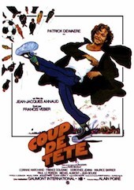
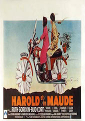

After 3 years in financial markets, I got bored and launched Le Wagon. Our mission: bring technical skills to creative people.
see for yourself|  |
Coup de têteA social outcast struggles for a sense of purpose in a French city where soccer is considered the primary importance. François Perrin plays football at the AS Trincamp. During a training session, he gets into a fight with Bertier, the team's star, and is ordered off the field. The club's boss, who is also a powerful businessman, takes advantage of the situation and sacks him... But Perrin's revenge will be sweet. |
|  |
Harold and MaudeYoung, rich, and obsessed with death, Harold finds himself changed forever when he meets lively septuagenarian Maude at a funeral. Harold must lose his fear of change, and stop alienating those who try to get close to him by faking suicide. Falling in love with Maude will help him to learn how to enjoy life. |
L'Enlèvement de Michel HouellebecqThe writer Michel Houellebecq has a calm and uneventful life, he walks in his neighborhood and talks with his friends. But one day three men followed him to his building, tied up and kidnapped him. Perplexed about the wishes of its captors who seem themselves in the uncertainty of their project, they will all find themselves accommodated in a house of a retired couple, in a friendly and family semi-captivity where the sensibilities of each will be update, punctuated by the gloomy and folkloric moods of the famous writer. The film was inspired by a rumour which occurred while Houellebecq was promoting his novel The Map and the Territory. For some time, he appeared to give no signs of life, which made newspapers in France speculate that he had been kidnapped. In reality he only had some trouble with his Internet connection. |